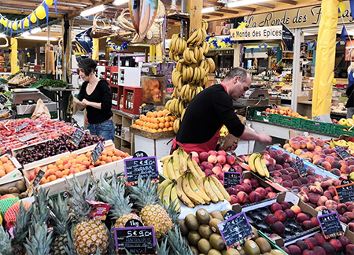
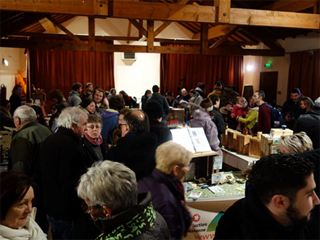
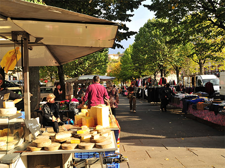
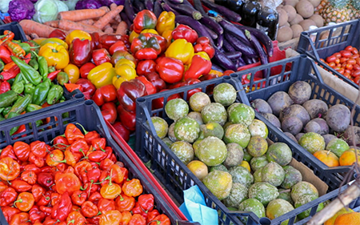
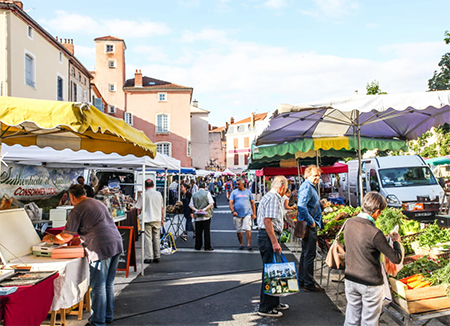
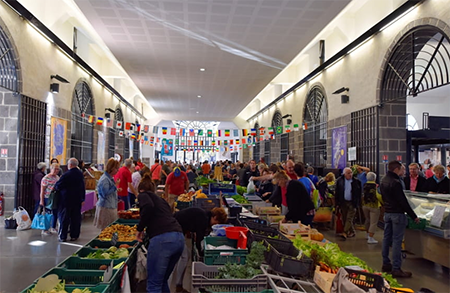
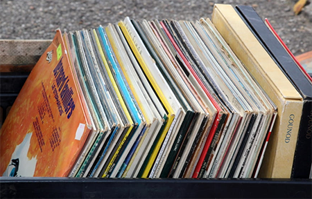
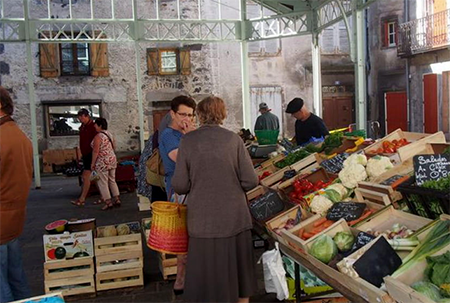

Place Saint-Pierre
63000 Clermont-Ferrand
La nature est un Luxe !

Place Saint-Pierre
63000 Clermont-Ferrand
Toute l'année. Tous les jours de 7h à 19h.
Fermé le dimanche.

63440 Saint-Hilaire-la-Croix
Période d'ouverture : Hiver, Printemps

Place du Pré
63320 Champeix
Toute l'année, tous les vendredis de 8h à 12h.

63730 Plauzat
Toute l'année, tous les vendredis de 16h à 20h.
1er et 3ème vendredi de chaque mois.

63500 Issoire
Toute l'année, tous les samedis de 8h à 12h30.

Rue Saint-Amable
63200 Riom
Toute l'année
Ouverture le samedi de 8h à 12h30.

63000 Clermont-Ferrand
Du 01/01 au 31/12, tous les dimanches de 7h à 13h.

63840 Viverols
Toute l'année : tous les mardis de 8h à 12h (Les 1er et 3è mardis du mois).